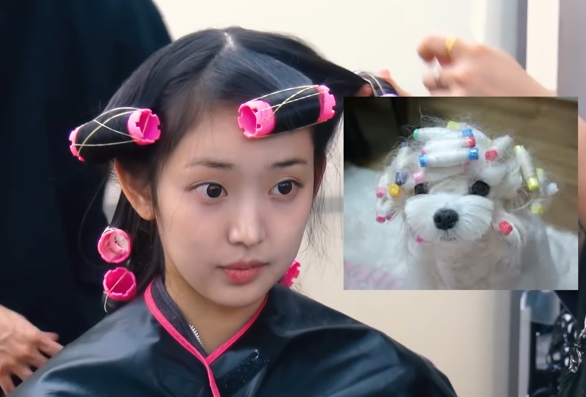
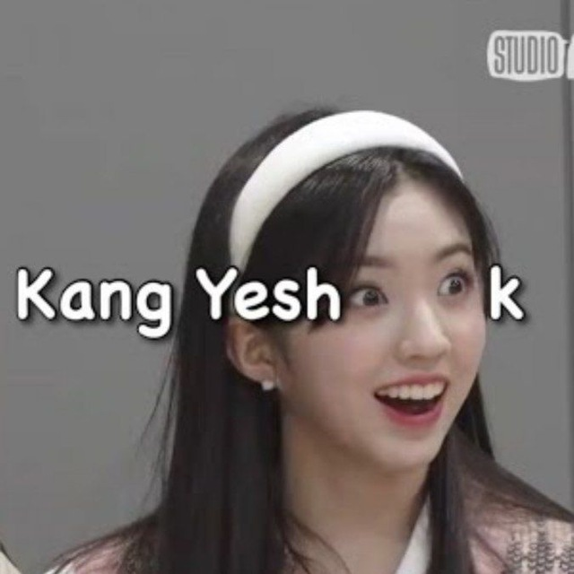

Draft Game
Faça um draft com suas idols preferidas e tente montar o time ideal com base nas variáveis de posições, conceitos e gêneros musicais.

Quiz Game
Teste seus conhecimentos sobre K-Pop com perguntas desafiadoras.

Gacha Game
Rode o gacha e obtenha novas idols para seu time, combinando sorte e estratégia.

Manager Game
Gerencie seu grupo de idols, planeje estratégias e acompanhe o desempenho de suas atividades.